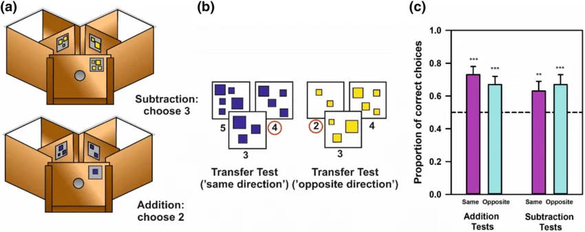

Honeybees possess a remarkable ability to process symbolic information, proving that complex mathematics does not require a large, human-like brain. Research conducted in Australia demonstrated that individual bees could be trained to solve arithmetic problems using a system of color-coded rules.
The Addition and Subtraction Experiment
The experiment utilized a Y-shaped maze where bees were rewarded with sugar water for correct "calculations" 🍯
The process functioned as follows:
Symbolic Language: Researchers established that the color Blue signified "add one" (+1) and the color Yellow signified "subtract one" (-1).
The Workflow: A bee would fly into the maze and view a starting number of shapes (e.g., three blue squares).
Decision Making: Upon reaching a fork in the tunnel, the bee had to choose between two paths—one with two shapes and one with four.
The Result: Because blue meant addition, the bee consistently chose the path with four shapes ✅
This behavior indicates that bees can recognize numerical quantities and, more importantly, apply an abstract rule to change their behavior based on a specific input.

The Waggle Dance: Nature's GPS 💃📍
Bees also use math for directions. When a bee finds flowers, it goes back to the hive and performs a "waggle dance." The angle of the dance relative to the sun tells the other bees which direction to fly. How long the bee wiggles its body tells the others how far away the food is 🌻
II. What is a "Turing Machine"? 💻📜
Named after Alan Turing, the father of modern computing, a Turing Machine is not a physical machine with gears. It is a thought experiment to show how any problem in the world can be solved using simple steps.
The Infinite Tape Model describes a Turing machine as a system composed of three fundamental elements: an infinite tape divided into discrete squares, a read/write head capable of moving both left and right, and a set of programmed instructions. This "program" dictates the machine's actions, determining whether it should move or modify a square based on the specific symbol the head currently observes.
The "Penny and Plate" Analogy
Imagine you are sitting at a long table with an endless row of plates 🍽️. You are wearing a mask so you can only see one plate at a time.
The Input: There are 3 pennies on the first three plates, then an empty plate, then 2 more pennies. This represents the problem 3 + 2 🪙
The Rule: Your only instruction is: "Move right until you find an empty plate. Put a penny there. Keep moving right until you find the very last penny. Pick it up and throw it away".
The Result: If you follow those mindless steps, you will end up with a solid row of 5 pennies.
The Lesson: You solved the math problem without ever "knowing" how to add. You were just following a rule. This is exactly how your laptop works. It follows tiny rules using electricity instead of pennies.
NOTE: While the transcript discusses training bees to follow instructions, it is important to distinguish between computation and a Universal Turing Machine. A key requirement of a Turing machine is the ability to "write" to the tape—to place a symbol down and return to it later as a stored variable. While bees can "read" colors and "calculate" paths, they do not naturally have a mechanism to "write" and store data for multi-step processing in the way a computer does. Therefore, a single bee is a calculator 🧮, but not a full-scale Turing machine.
The Von Neumann Architecture 🏗️
The transition from Alan Turing’s abstract theory to physical engineering was realized by John von Neumann, who developed the blueprint for nearly every digital device in existence today. While Turing proved that a machine could compute any logical task, von Neumann designed the stored-program architecture to make it a reality.
By storing both data and instructions in a single electronic memory, he eliminated the need to manually re-wire hardware for different tasks. This layout—consisting of a Central Processing Unit (CPU), a dedicated Memory unit, and Input/Output interfaces—transformed the "Universal Turing Machine" from a mathematical thought experiment into the practical foundation of the modern world.
III. Swarm Intelligence and the Crab Computer 🦀👾
If an individual organism cannot serve as a computer, a collective group might. In 2011, researchers explored this by using soldier crabs to build functioning logic gates. Normal crabs scatter when they collide. Soldier crabs are known for their swarming behavior; when two swarms collide, they do not scatter in chaos but instead merge and move in a predictable, unified direction, behaving much like billiard balls 🎱
By creating mazes shaped like the letters "X" or "Y," scientists used these swarms as biological "inputs." By observing which exit the combined swarm chose, they could simulate the basic operations of a computer, such as AND gates (where two signals are needed for an output) and OR gates (where either signal works). In this scenario, the crabs act as the "hardware" of the computer. They have no idea they are solving a problem; they are simply following their biological instincts, yet the result is a successful logical computation.
💡 Extras
The scale required for biological computing is immense. To process a standard 1-gigabyte file — the size of a short video or a small app update — it is estimated you would need roughly 640 billion crabs 🤯. This highlights the incredible efficiency of modern silicon chips, which perform these same "crab-like" movements of electricity billions of times per second in a space smaller than a fingernail.
IV. The Philosophical Implications of Computation 🧠❓
The ability to simulate a computer using biological entities raises profound questions regarding the nature of the human mind and the "hard problem" of consciousness. A computer can calculate "3+2," but it doesn't "feel" happy when it gets the answer.
If our brains are just trillions of tiny biological "switches" following rules,
where does the "feeling" of being alive come from?
Two Primary Theories of Mind
Emergentism: Consciousness is a direct result of computational complexity. If you build a system with enough interconnected "logic gates" (whether they are neurons, crabs, or silicon transistors), the feeling of "being" and "self" will naturally emerge once a certain threshold of complexity is reached. Just as a billion water molecules create the property of "wetness" 🌊, a billion neurons following rules create the property of "self."
Panpsychism: Consciousness is not "created" by the brain but is a fundamental property of the universe, akin to electromagnetism or gravity. In this view, the brain may act more like a receiver or a conduit for a quality that is already present in the fabric of reality 🌌
The "Phenomenal Zombie" Argument 🧟♂️
The "Phenomenal Zombie" is a thought experiment used to challenge the idea that consciousness is just a result of physical or computational processes. It describes a being that is physically and behaviorally identical to a human—reacting to pain and holding conversations—but lacks any internal, subjective experience.
The Strategic Insight: If such a "zombie" can survive and function effectively through pure logic, it suggests that consciousness is not a functional necessity for evolution or computation. This raises the "Hard Problem": if "feeling alive" doesn't offer a distinct survival advantage over a mindless but efficient biological robot, why does consciousness exist at all? So Emergentism can't be true!!
"Is this experience of being in this room... just computation... or is there something extra, something sort of magical on top?"
V. Physiological Impact of Language and Dialect 🗣️💪
A long-standing debate in linguistics and biology concerns whether the specific sounds of a language or accent can physically reshape a speaker's facial features over a lifetime. While often dismissed as a myth, there is evidence suggesting that the repetitive use of specific muscle groups for speech can leave subtle, unique biological markers.
Muscle Memory and Facial Recognition
Because speech requires the coordinated movement of the lips, cheeks, tongue, and jaw, different languages place varying demands on the facial musculature.
Computational Detection: Modern software can identify the language a person is speaking simply by analyzing the movement of their cheeks and eyes.
Tonal Identification: The muscular patterns required for tonal languages are distinct enough to be visually identified by observation alone, even without audio.
The Case of the !Xóõ Language
The language !Xóõ (also known as Taa), a Tuu language from Southern Africa, provides a striking example of biological adaptation to speech. This language is noted for having one of the largest phoneme inventories in the world, including a complex array of "click" consonants.
Laryngeal Adaptation: Linguist Anthony Traill, who mastered !Xóõ as a non-native speaker, developed a physical bump on his larynx due to the specific sounds of the language.
Developmental Evidence: Adult native speakers of !Xóõ consistently possess this laryngeal bump, whereas children—who have not yet spent years producing these specialized sounds—do not. This suggests that the physical structure of the throat adapts to the mechanical requirements of the language.
💡 Extras
The exclamation point and capital "X" in the spelling of !Xóõ are not punctuation; they are International Phonetic Alphabet (IPA) symbols used to represent different types of click sounds produced by the tongue against the roof of the mouth or teeth.
VI. Diet, Evolution, and Sound Production
The ability to produce certain speech sounds may be tied to human evolution and changes in lifestyle, specifically regarding the transition from hunter-gatherer diets to softer, processed foods.
The Labiodental Theory
A prominent theory suggests that labiodental sounds (like "f" and "v") are relatively recent additions to the human phonetic repertoire.
Hunter-Gatherer Jaw: In cultures that consume hard, unmilled grains and tough meats, the teeth typically meet "edge-to-edge" (the top and bottom teeth align vertically). This alignment makes producing labiodental sounds mechanically difficult.
Agricultural Shift: As humans transitioned to softer diets, many populations developed an "overbite" (where the top teeth sit slightly ahead of the bottom). This modern jaw structure makes the lower-lip-to-upper-teeth contact required for "f" and "v" sounds much more natural.
VII. The Concept of the "Historical Face"
There is a frequent observation that people from the mid-20th century or earlier possessed "faces" that seem fundamentally different from people today. This has led to the modern internet phenomenon of the "iPhone Face"—the sense that contemporary actors look too "modern" to convincingly portray historical figures.
Factors of Facial Change
While it is tempting to attribute these differences to changes in accents or vocabulary, most researchers point to more practical factors:
Grooming and Aesthetics: Changes in hair styling, eyebrow shaping, and makeup significantly alter facial perception.
Diet and Orthodontics: Modern nutrition and the widespread use of braces have fundamentally changed the average jawline and dental structure compared to previous generations.
The "Timothy Chalamet" Effect 📱🤳: The term "iPhone Face" describes a subtle, often unidentifiable quality that makes a person look like they belong to the digital age, potentially influenced by modern expressions, posture, or even the lack of physical wear-and-tear found in pre-industrial life.
VIII. The Psychology of Self-Touch: The Subjectivity of Focus 🖐️🧠
A significant point discussed is the mental "switch" that occurs when you touch your own hands together. Unlike touching an external object, self-touch creates a unique sensory loop where you are both the actor (the one touching) and the receiver (the one being touched) 🔄
The Mental Shift: When you press your hands together, you can consciously choose which hand is "doing" the touching. By shifting your mental focus, you can make it feel like your right hand is exploring your left, or instantly flip the sensation so the left hand feels like the active participant.
The "Vanishing" Sensation: This exercise demonstrates how our brain prioritizes different sensory inputs. Usually, we don't feel our hands touching each other at all unless we focus on it; the brain "filters out" constant self-contact to focus on more important environmental data.
IX. The Physicality of Speech Production 🤐
Most speakers are remarkably unaware of the physical mechanics involved in their own speech. This lack of awareness is often highlighted through linguistic "riddles" or games that focus on bilabial contact (lips touching).
The "Touch vs. Separate" Paradox
A classic linguistic observation involves the physical irony of certain words:
- When you say the word "Touch," your lips do not touch.
- When you say the word "Separate," your lips do touch at the "p" sound. Sensory Blindness in Speech: The reason it takes people hours to solve the "Touch vs. Separate" riddle is that our brains focus on the meaning of the word rather than the mechanics of the mouth. Proprioception: This is your "body sense" — your brain's ability to know where your limbs (or lips) are without looking. When we speak, our proprioception is "muted" regarding our mouth. We are so focused on the social and intellectual goal of communicating that we don't notice our lips hitting for the "p" in "separate" or the "b" in "double-u."
Bilabial Consonants
Despite the feeling that the mouth is constantly active, only a small fraction of the alphabet requires the lips to meet.
These are primarily the sounds for: M, B, and P. W is often mistaken for a lip-touching sound, but the lips generally only "tease" or approach one another without making full contact.
🔄 Alternative Ideas / View
While the transcript suggests that researchers attribute facial differences primarily to diet and grooming, some speech pathologists argue that "myofunctional" habits—how we hold our tongue and mouth at rest based on our primary language—can indeed influence the development of the jaw and facial aesthetics over long periods, especially during childhood development.
X. The Holocene Calendar (Human Era) 📅🌍
The Holocene Calendar shifts the historical "Year Zero" to the beginning of the current geological epoch. By adding 10,000 years to the current Gregorian date (e.g., 2026 CE becomes 12,026 HE), we create a linear, strictly positive timeline for human history.
Link for the calendar: https://michaelzrork.github.io/Holocene_Calendar
Eliminating the "BC" Countdown: In the traditional system, BC years count backward, making spans of time difficult to calculate. The HE system uses only positive integers, placing all major civilizations in a logical sequence.
Temporal Perspective: This scale provides a clearer sense of proximity. On a 12,000-year timeline, the 45-year gap between the end of WWII and the end of the Cold War appears as the brief moment it truly is, rather than two "different universes."
The Curve of Human Progress 📈
Visualizing history on a 12,000-year scale reveals a dramatic exponential acceleration of technology and social complexity.
The Silent Millennia: For the first 7,000 years of the Holocene (0–7000 HE), progress was marked by "slow" breakthroughs like pottery and the domestication of animals.
The Literacy Threshold: Writing emerged around 7000 HE (3000 BC). It created the boundary between "prehistory" and "recorded history."
The Modern Explosion: The final 500 years of the calendar show a dense cluster of life-changing events—from the printing press to the moon landing—occurring at a pace that dwarfs the previous 11,000 years combined.
Geological Roots of Global Mythology
The transition into the Holocene was marked by rapid environmental shifts that likely shaped early human culture and storytelling. As glaciers retreated, sea levels rose significantly. In some regions, this occurred rapidly enough to force the sudden abandonment of coastal settlements.
Universal "Flood Myths" (e.g., Noah’s Ark, Gilgamesh) may be oral survivors of these real geological events. These stories were passed down for thousands of years before finally being codified once writing was invented.
XI. Earth’s History: The One-Hour Compression ⌛
To comprehend the vastness of biological time, we can compress the 3.8 billion years of life on Earth into a single hour (12:00 to 1:00). In this model, the "today" we inhabit occurs at the very last stroke of 1:00.
The Biological Timeline
The distribution of events in this hour reveals how "recent" complex life actually is:
12:00:00 (The First Second): Simple, one-celled organisms like bacteria appear.
12:51:00 (51 Minutes In): The first fish emerge in the oceans.
12:56:00 (56 Minutes In): Dinosaurs arrive. Notably, their entire reign lasts only three minutes on this scale.
12:58:00 (58 Minutes In): The earliest birds appear.
12:59:59.8 (0.2 Seconds Before the End): Anatomically modern humans finally appear.
XII. The "Life as a Pizza" Metaphor 🍕
Moving from deep time to a single human lifespan, we can visualize the distribution of our time using a 12-slice pizza model. This highlights how our "discretionary" time is far more limited than it often feels.
The Allocation of Slices
4 Slices (33%): Dedicated to Education and Work.
4 Slices (33%): Dedicated to Sleep and nighttime preparation.
1 Slice (8.3%): Domestic maintenance, including shopping, chores, and caregiving.
1 Slice (8.3%): Travel and transit (commuting, errands, and holidays).
1 Slice (8.3%): Food—both the preparation and the act of eating.
1 Slice (8.3%): Leisure. This final slice encompasses all recreation, exercise, internet use, and games.
💡 Extras
The "Pizza" model is a reminder of the Scarcity of Leisure. Because 75% of our "slices" are pre-allocated to survival and labor (8 slices) and necessary maintenance (1 slice), the quality of our life is often determined by how intentionally we use that single, final slice of leisure.
The 4,000-Week Perspective
Average Human Lifespan is approximately 72–80 years, which translates to roughly 4,000 weeks. A profound way to reframe the human experience is to view a lifetime not in years, but in weeks. Based on the work of Oliver Burkeman, the average human life consists of approximately 4,000 weeks. This finite number serves as a tool for radical prioritization.
The Shrinking Scale of Opportunity
When life is measured in weekly units, the "quantity" of specific experiences becomes surprisingly small:
Finite Saturdays: A person has only 4,000 Saturdays in their entire life. When you filter for specific types of experiences—such as "rainy Saturdays spent with a child" — the number drops from thousands to perhaps only a few dozen.
Relationship "Residue": For those who have already left home, the remaining "quality time" left to spend with aging parents is often a tiny fraction of the time already spent. If you see your parents twice a year and they live for 20 more years, you only have 40 interactions left ❤️
Glossary
Emergent Properties: Complex states or behaviors in a system that arise from the relatively simple interactions of its individual parts, which the parts themselves do not possess.
Panpsychism: The philosophical view that consciousness, mind, or "soul" is a universal and primordial feature of all things, rather than an emergent property of complex biological brains.
Phonemes: The smallest units of sound in a language that distinguish one word from another (e.g., the "p" and "b" sounds in "pat" and "bat").
Larynx (Voice Box): An organ in the neck involved in breathing, producing sound, and protecting the trachea against food aspiration.
Labiodental Sounds: Speech sounds produced by the interaction of the lower lip and the upper teeth (e.g., the "f" and "v" sounds).
Tonal Languages: Languages where the pitch or intonation used when pronouncing a word affects its meaning (Eg: Mandarin, Thai..).
🖋️ Grapheme: The Visual Unit
A grapheme is the smallest functional unit of a written language. It is the physical symbol used to represent a sound. A grapheme can be a single letter (like b), or a combination of letters that represent one sound (like ch or ight). It is the "written representation" of a sound. Examples: In the word "cat," there are three graphemes: c, a, and t.
In the word "leaf," there are three graphemes: l, ea, and f (the "ea" acts as one unit).
🔊 Phoneme: The Auditory Unit
A phoneme is the smallest unit of sound in a language that can change the meaning of a word. Phonemes are abstract mental categories of sounds. We usually write them between slashes, like $/b/$ or $/s/$. They are the "building blocks" of speech. If you swap one phoneme for another, you create a entirely different word (e.g., changing the $/h/$ in "hat" to $/b/$ creates "bat"). Examples: The word "thin" has three phonemes: $/θ/$ (the th sound), $/ɪ/$ (the short i), and $/n/$.
The word "ox" has two letters (graphemes) but three phonemes: $/ɒ/$, $/k/$, and $/s/$.